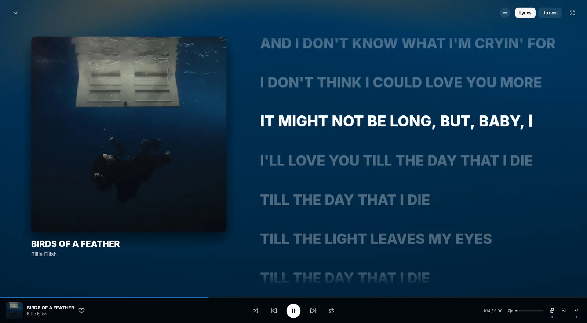

A native client with a 10-band biquad equalizer, ambient hardware backlight sync, syllable-synced lyrics, and instant HLS streaming under 50 MB of memory.

Native GPU rendering, lock-free audio DSP, and zero browser bloat.
Shape frequencies from 31 Hz to 16 kHz with peaking biquad filters, built-in peak limiting, Automix crossfades, and a zero-allocation 16-band live spectrum visualizer.
Syncs album art colors and audio-reactive brightness to ASUS TUF/ROG laptops (SMBIOS-guarded ATKACPI), OpenRGB, and SteelSeries GameSense.
Native HLS chunked streaming with QuickJS cipher solving, automatic 403 URL renewal, and optional lossless FLAC playback via Monochrome & JioSaavn.
Syllable-level karaoke with Japanese, Korean, and Chinese romanization over damped spring transitions, frosted borders, and cached player glow.
Import Spotify playlists, download tracks with embedded metadata, track local Listening Replay stats, and set a countdown or end-of-track sleep timer.
Preview how BitChord PC's peaking biquad bands shape gain from 31 Hz to 16 kHz.
Measured on Windows 11 (ASUS TUF A15, Ryzen 7, 16 GB RAM). Reproducible via benchmarks/measure.ps1.
| Benchmark Metric | BitChord PC (v2.2.0) | Web / Electron Clients |
|---|---|---|
| RAM (Idle / Active Playback) | 42 MB / 68 MB | ~220 – 700 MB |
| Cold Startup Time (Median) | 182 ms | 2.5 – 4.0 seconds |
| Idle CPU Draw | 0.0% (0 FPS idle) | 2.5 – 6.0% (Render loop) |
| Audio Pipeline | rodio + Symphonia (Native PCM) | Chromium HTML5 Audio |
| Equalizer & Spectrum | 10-Band Biquad EQ + 16-Band Spectrum | None / WebAudio extension |
| Hardware RGB Integration | ASUS TUF/ROG, OpenRGB, SteelSeries | Not supported |
Free, open-source, and signed-off in CI. Runs on Windows 10/11, macOS 11+, and Linux.